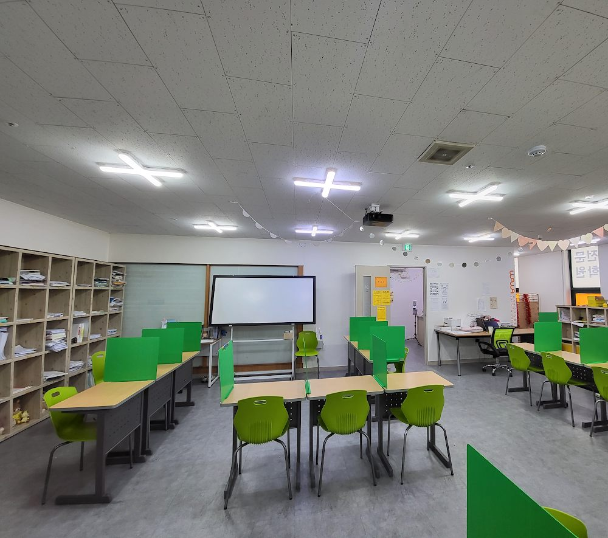

✦ 15년간 검증된 강사진
우리 아이의 가능성을
최대로 끌어올립니다
초등 · 중등 · 고등 전 학년
개별 맞춤 학습 플래닝 + 자기주도학습 완성
학원이지만 교습소·과외 부럽지 않은 1:1 밀착 관리
학원 시설 안내
쾌적하고 집중하기 좋은 학습 환경을 갖추고 있습니다
개설 과목 안내
초등부터 고등까지, 필요한 모든 과목을 한 곳에서
국어과외·영어과외·수학과외·사회과외(사탐과외)·과학과외(과탐과외)·한국사과외까지 학원·과외 형태 모두 가능합니다

수학
개념 완성부터 심화 문제풀이까지
단계별 맞춤 커리큘럼

영어
회화·문법·독해·내신
목표별 집중 수업

국어
문학·비문학 독해
논술 및 작문 지도

과학
실험·개념 연계(과탐)
내신 집중 대비

사회
역사·지리·일반사회(사탐)
탐구 영역 내신 대비

한국사
선사부터 현대사까지 흐름 정리
수능 필수과목 집중 대비
초등 수학학원은 연산과 사고력 기초를, 초등 영어학원은 파닉스와 기초 회화를 다집니다. 중등 수학학원·중등 국어학원·중등 영어학원은 내신 개념 정리와 서술형 대비를 중심으로 지도하며, 고등 수학학원·고등 국어학원·고등 영어학원·고등 과학학원·고등 사회학원·고등 한국사학원은 수능·내신 병행 전략으로 지도합니다. 전국 지점 모두 학년별 맞춤 커리큘럼을 기본으로 운영합니다.
소수정예 보습학원 와와학습코칭센터
와와학습코칭센터를 선택해야 하는 이유
🎯
FEATURE 01
4C 프로세스 맞춤 코칭
학생별 학습 특성을 진단해 1:1 맞춤 솔루션을 제공합니다.
🦉
FEATURE 02
둥지 학습·수평적 수업
학생 눈높이에서 진행되는 수업으로 적극적 참여와 이해를 만듭니다.
🤝
FEATURE 03
생활밀착형 코칭
학습 습관·생활 리듬·감정까지 함께 관리합니다.
📚
FEATURE 04
다양한 과목 운영
영어, 수학 등 다양한 과목을 운영하고 지도합니다.
이 학원이 다른 이유
단순 강의가 아닌, 아이 한 명 한 명을 위한 성장 시스템
공부는 하는데 성적이 제자리인 아이, 공부하는 이유를 모르는 아이, 나만의 공부법이 없는 아이 — 학습 성향 진단부터 다시 시작합니다.
개별 맞춤 지도
학생 개인의 수준과 목표에 맞춘 1:1 커리큘럼 설계. 진단 테스트 후 부족한 부분부터 체계적으로 채워드리고, 국어·논술은 1:1 첨삭까지 진행합니다.
학습 플래닝
주 2회·3회·5회 중 원하는 수업 빈도를 선택할 수 있고, 주·월 단위 학습 계획 수립 및 진도 점검 피드백을 매월 학부모께 투명하게 공유합니다.
자기주도학습 형성
스스로 공부하는 습관 형성을 위한 체계적인 학습 훈련. 학원을 벗어난 날에도 공부하는 아이로 키웁니다.
1:1 밀착 수업
둥지형 수업으로 한명의 선생님이 학생과 일대일로 밀착 관리해서 수준별 학습을 실시간으로 제공합니다.
방학특강 프로그램
방학 집중 학습 기간을 활용한 학년별·목표별 특화 커리큘럼으로 학습 효율을 극대화합니다.
AI 학습 분석
AI와 연계한 학습 데이터 분석으로 취약 부분을 정확히 진단하고, 개인 맞춤형 학습 콘텐츠를 제공합니다.
검증된 강사진 소개
10년 이상 학생 지도 경험을 보유한 전문 선생님들로 운영하고 있습니다.
단, 지역마다 선생님의 경력 사항은 상이할 수 있습니다.
수학 전담
김○○ 선생님
서울대 수학과 졸업 · 수능 강의 경력 12년
중등·고등 수학 내신 및 수능 집중 지도 · 1등급 배출 다수
영어 전담
박○○ 선생님
연세대 영어영문학과 졸업 · 토익 990점 · 경력 11년
회화·독해·내신 전 영역 지도, 원어민 수준 발음 교정
국어·논술
이○○ 선생님
고려대 국어교육과 졸업 · 논술 전문 강사 · 경력 14년
수능 국어 1등급 배출 다수 · 대입 논술 합격 실적 보유
등록 & 상담 절차
간단한 4단계로 우리 아이 맞춤 수업을 시작하세요
1
온라인 상담 예약
하단 양식 작성 또는 전화 예약으로 방문 일정을 잡아드립니다. 예약 후 3시간 이내 담당 강사가 직접 연락드립니다.
2
학원 방문 & 학습 진단
학생 수준 진단 테스트와 학부모 상담을 통해 현재 수준과 목표를 정확히 파악합니다. (약 40분 소요)
3
맞춤 커리큘럼 설계
진단 결과를 바탕으로 개인별 학습 플랜과 반 배정을 완료합니다. 목표 성적까지의 로드맵을 함께 그려드립니다.
4
수업 시작 & 지속 관리
수업 시작 후 월 1회 학습 피드백 리포트로 학부모께 진도를 투명하게 공유하며 지속 관리합니다.
수강료 안내
※ 정확한 학원비는 방문 상담을 통해 결정됩니다 · 수업 시간은 90~100분 기준입니다 · 또한 학습 플래닝이나 AI 학습 등 커리큘럼에 맞춘 추가 학습 비용이 별도로 발생할 수 있습니다.
학부모 실제 후기
네이버 예약 기준 ★ 4.9 / 5.0 · 후기 230건+
★★★★★
아이가 수학을 너무 싫어했는데, 선생님이 아이 수준부터 차근차근 잡아주셔서 이번 중간고사에서 처음으로 85점이 나왔어요. 학습 플랜도 매달 공유해주셔서 진도 파악이 쉬웠습니다.
중2 학부모 · 수학 수강 6개월
★★★★★
영어 내신과 수능을 동시에 준비해야 해서 걱정이 많았는데, 박 선생님이 두 방향을 모두 잡아주셨어요. 소그룹이라 질문도 바로바로 할 수 있어서 좋았습니다.
고1 학부모 · 영어 수강 4개월
★★★★★
논술 준비를 어디서부터 시작해야 할지 막막했는데, 이 선생님이 첨삭까지 꼼꼼히 봐주셔서 원하는 대학 수시 논술에 합격했습니다. 정말 감사드립니다.
고2 학부모 · 국어·논술 수강 7개월
자주 묻는 질문
우리 동네에도 와와학습코칭센터 지점이 있나요?
전국 200여개 지점을 운영하고 있습니다. 센터 찾기 페이지에서 지역명이나 인근 학교명으로 검색하면 가장 가까운 지점을 바로 확인할 수 있습니다.
초등학생도 학원에 다닐 수 있나요? 몇 학년부터 시작하면 좋을까요?
초등 1학년부터 등록 가능합니다. 이 시기에는 성적보다 학습 습관과 자기주도학습 태도를 잡는 것을 우선으로 지도합니다.
중학생 내신 대비 학원은 무엇이 다른가요?
중등부는 자유학기(자유학년) 동안 흐트러지기 쉬운 학습 긴장을 유지하면서, 국어·영어·수학·과학·사회 과목별 개념 정리와 내신 서술형 대비를 함께 진행합니다.
고등학생 수능 대비 학원 수업도 가능한가요?
가능합니다. 고등부는 수능과 내신을 병행 대비하며, 국어·영어·수학·과학(과탐)·사회(사탐)·한국사까지 전 과목 수능 필수 대응이 가능합니다.
국어·영어·수학 외에 사회·과학·한국사 학원도 다니고 있나요?
네, 전 지점에서 국어·영어·수학·과학·사회·한국사 6개 과목을 모두 개설하고 있어 한 곳에서 전 과목 관리가 가능합니다.
학원, 과외, 공부방은 어떻게 다른가요?
와와학습코칭센터는 학원의 체계적인 커리큘럼과 과외 수준의 1:1 밀착 관리를 함께 제공하는 소수정예 보습학원입니다.
학부모 리포트는 어떤 방식으로 제공되나요?
수업 시작 후 월 1회 학습 피드백 리포트를 통해 학생의 진도와 학습 상태를 학부모님께 투명하게 공유합니다. 주·월 단위 학습 계획 수립 및 진도 점검 피드백도 함께 안내해드립니다.
무료 상담 / 방문 신청
📞 010-8411-7380
지금 바로 전화 또는 신청하시면
담당 선생님이 직접 연락드립니다
📞 상담 신청하기
카카오톡 상담